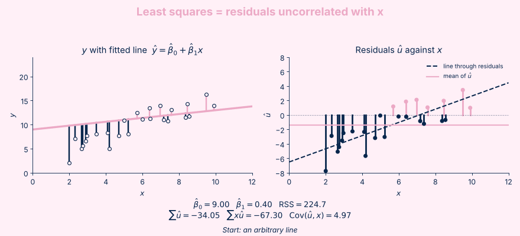
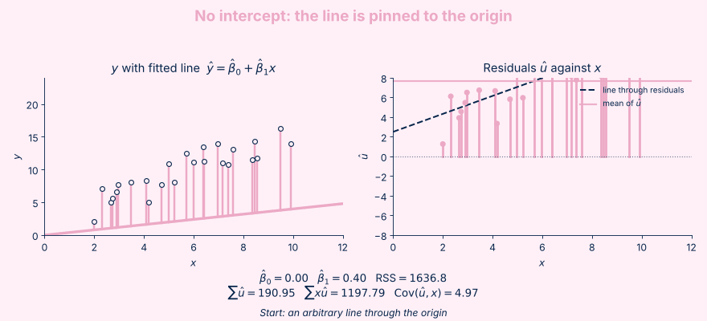

The Art of Linear Regression
Part I: Motivation and Assumptions behind Linear Regression.
1. Motivation
Suppose we want to understand how an outcome is related to other variables. For example, how much do wages change with an extra year of education? In the population, some unknown data generating process produces the outcome from these variables, along with many other factors we do not observe or understand.
Unfortunately, we never see this process directly, only a sample of observations from it. What we can do is choose a simple model, such as a straight line, to approximate how the average outcome changes with the variable of interest. Linear regression is the tool for estimating that model from data, and it lets us ask how much the outcome moves on average when a covariate changes by one unit.
Suppose we construct a model: \(Y = \beta_0 + \beta_1X + u\) where
- \(Y\) is the outcome,
- \(X\) is the regressor,
- \(u\) is the error term, representing everything affecting Y that are not being captured by this model.
2. Mean independence of the error
The error term \(u\) is mean independent of the regressor if \(E[u|X] = 0\). This is because \(E[u|X]\) is a function of X and it is constant regardless of X values.
One way to interpret mean independence is that knowing X values gives you no information about the mean of \(u\). Formally, \(E[u|X] = E[u]\) where the conditional mean will stay the same as the mean regardless of X values.
Mean independence of error is a required assumption when using Linear Regression. Otherwise, the model is not correctly specified which leads to meaningless interpretation of effects because it will combine the effect of X and some other unobserved omitted variable.
It is worth noting that \(E[X|u] = 0\) is a stronger condition than \(E[u]=0\). By Iterated Law of Expectation, we have \(E[E[u|X]]=E[X]\). Hence, if \(E[X|u] = 0\), \(E[E[u|X]]= E[0] = 0 = E[X]\). The reverse might not be true, meaning \(E[u] = 0\) does not imply \(E[X|u] = 0\).
Let's illustrate this idea with an example. Suppose wages are generated by \(\text{Wage} = 10 + 1.5\,\text{Education} + u\), where \(u = 3\cdot\text{motivation}\). The true effect of one more year of education is \(1.5\). Move the slider to change how strongly motivated people choose more education.
Dots are individual errors \(u\). The pink line joins the average of \(u\) within each education bracket, which is \(E[u \mid \text{Ed}]\).
Dashed navy is the true relationship (slope \(1.5\)). Pink is what least squares estimates.
When motivation and education are independent, our estimated coefficient is correctly recovered. This means that we correctly discover the effect of education on wage. Meanwhile, if motivation and education are correlated, then the estimated coefficient blends the effect of them both. If we don't account for this omitted variable and interpret this coefficient as the effect of education on wage, we effectively overestimate it and fail to discover the true effect which is the purpose of our study.
One way to ensure education and motivation are independent is through Randomized Controlled Trials where we randomly select individuals for our study.
3. Linear in the parameters
\(y = \beta_1 + \beta_2 x^2 + u\) is a curve in \(x\), yet a straight line once you treat \(z = x^2\) as the regressor. That is why it counts as a linear model.
\(y\) against \(x\): clearly non-linear.
\(y\) against \(x^2\): a straight line with slope \(\beta_2\).
A model like \(y = \beta_1^2 x + u\) is non-linear because the parameter itself enters non-linearly.
It is much easier to work with linear models while nonlinear relationships between variables can still be represented.
4. Ordinary Least Squares (OLS): Fitting the line
Suppose \(y_i = \beta_0 + \beta x_i + u_i\). Least squares is an estimation technique that chooses \(\hat\beta_0\) and \(\hat\beta\) to make the fitted values \(\hat y_i = \hat\beta_0 + \hat\beta x_i\) as close as possible to the observed values \(y_i\). The gap between them is the residual, \(\hat u_i = y_i - \hat y_i\), and the estimates are the values that minimise the sum of squared residuals:
\[ \min_{\beta_0,\,\beta_1} \text{RSS}(\beta_0, \beta_1) = \min_{\beta_0,\,\beta_1} \sum_{i=1}^{n} \left(y_i - \beta_0 - x_i\beta_1\right)^2 . \]To find the minimum, take the derivative with respect to each parameter and set it to zero.
Note that a residual \(\hat u_i\) is not the same as the error \(u_i\). The error is unobserved and belongs to the population model, while the residual is what is left over after fitting the line to the data. Below is how \(\hat\beta_0\) and \(\hat\beta\) are fitted.

OLS with an intercept vs OLS without an intercept
When the model includes a constant, the first-order condition for \(\beta_0\) forces \(\sum_{i=1}^{n}\hat u_i = 0\). Together with the condition for \(\beta_1\), \(\sum_{i=1}^{n}x_i\hat u_i = 0\), this makes the residuals uncorrelated with the regressor:
\[ \operatorname{Cov}(\hat u, x) = \frac{1}{n}\sum_{i=1}^{n}x_i\hat u_i - \bar x\cdot\frac{1}{n}\sum_{i=1}^{n}\hat u_i = 0 - 0 = 0 . \]This is what the navy dashed line in the right-hand chart of the GIF above shows: the line through the residuals is flat.
Without a constant, there is no first-order condition for \(\beta_0\), so \(\sum\hat u_i = 0\) is no longer guaranteed. Least squares still gives \(\sum x_i\hat u_i = 0\), but then \(\operatorname{Cov}(\hat u, x) = -\bar x\cdot\frac{1}{n}\sum\hat u_i\), which is generally not zero. The residuals are therefore correlated with the regressor, and the line through them slopes.
